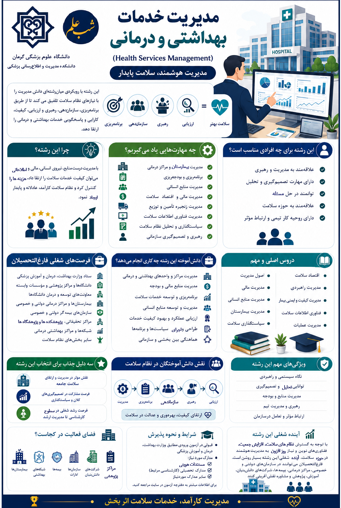

مدیریت خدمات بهداشتی و درمانی

معرفی رشته
مدیریت خدمات بهداشتی و درمانی (Healthcare Management) رشتهای است که به برنامهریزی، سازماندهی، رهبری و کنترل بیمارستانها، مراکز بهداشتی، کلینیکها و سایر سازمانهای ارائهدهنده خدمات سلامت میپردازد. هدف اصلی این رشته بهبود کارایی، اثربخشی و کیفیت خدمات از طریق مدیریت بهینه منابع انسانی، مالی، تجهیزات و فرآیندها است.
اهداف رشته
- افزایش بهرهوری و کاهش هزینههای بیمارستانی
- بهبود کیفیت مراقبت و ایمنی بیمار
- طراحی ساختار سازمانی کارآمد برای مراکز درمانی
- مدیریت منابع انسانی و بهبود انگیزش کارکنان سلامت
- پیادهسازی نظامهای اعتباربخشی و ارزیابی عملکرد
مهارتهای کسبشده
- مدیریت استراتژیک و عملیاتی بیمارستان
- بودجهریزی و کنترل هزینه در مراکز درمانی
- رهبری تیمهای بالینی و اداری
- ارزیابی عملکرد با شاخصهای کلیدی (KPIهای بیمارستانی)
- آشنایی با قوانین و مقررات نظام سلامت
دروس تخصصی
- مدیریت بیمارستان و مراکز بهداشتی
- مدیریت منابع انسانی در سلامت
- مدیریت مالی و اقتصاد بیمارستان
- مدیریت کیفیت و ایمنی بیمار
- بازاریابی و برندینگ در خدمات سلامت
- مدیریت اطلاعات و فناوری در بیمارستان
بازار کار
فارغالتحصیلان میتوانند در بیمارستانهای دولتی، خصوصی و خیریه، مراکز بهداشتی، درمانگاههای تخصصی، سازمانهای بیمه، وزارت بهداشت (معاونت درمان)، دانشکدههای علوم پزشکی (مدیریت امور اجرایی) و شرکتهای مشاوره مدیریت سلامت مشغول شوند. عناوین شغلی شامل مدیر بیمارستان، مدیر اجرایی کلینیک، مدیر کیفیت، مدیر منابع انسانی سلامت و مشاور مدیریت بیمارستانی است.
ادامه تحصیل
کارشناسی ارشد و دکتری تخصصی مدیریت خدمات بهداشتی و درمانی در دانشگاههای علوم پزشکی تهران، ایران، کرمان، شیراز، اصفهان، شهید بهشتی و تبریز ارائه میشود. همچنین فرصت گذراندن دورههای بینالمللی مدیریت سلامت وجود دارد.
آینده شغلی
با پیشرفت تکنولوژی و افزایش تقاضا برای خدمات باکیفیت، متخصصان مدیریت سلامت بسیار پرتقاضا هستند. موقعیتهای پیشرفته شامل مدیر ارشد بیمارستانهای بزرگ، مشاور ارشد نظام سلامت، مدیر برنامههای تحول سلامت و رئیس هیئت مدیره شبکههای درمانی است.
سوالات متداول
خیر، فارغالتحصیلان مدیریت، اقتصاد، پرستاری، مامایی و حتی مهندسی صنایع نیز پذیرفته میشوند.
بله، بیمارستانهای بینالمللی، سازمان جهانی بهداشت و شرکتهای مشاوره مدیریت سلامت در کشورهای مختلف متخصصان این حوزه را استخدام میکنند.
مدیریتی، اما آشنایی با فرآیندهای بالینی برای درک بهتر بیمارستان ضروری است.
🖼 گالری تصاویر

اینفوگرافی
برای دیدن تصویر در اندازه بزرگ، روی آن کلیک کنید.